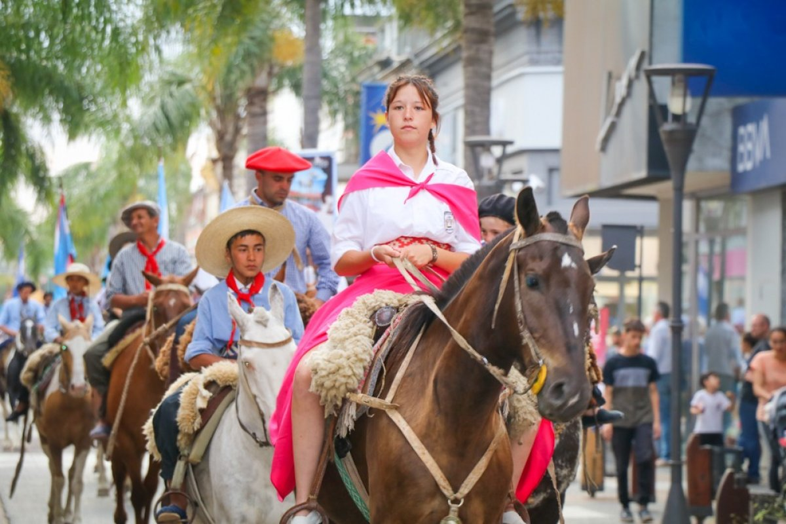

Museos y patrimonio
El Museo Quirós y otros espacios culturales resguardan la memoria histórica y artística de la ciudad.

Gualeguay conserva una rica herencia cultural que se manifiesta en sus fiestas populares, sus museos, la música entrerriana y las costumbres transmitidas de generación en generación.

El Museo Quirós y otros espacios culturales resguardan la memoria histórica y artística de la ciudad.
La cultura de Gualeguay es el reflejo de su historia, sus tradiciones y la creatividad de su gente. La ciudad se reconoce por su fuerte identidad entrerriana, donde conviven el patrimonio histórico, las expresiones artísticas y las costumbres transmitidas de generación en generación. El Museo Quirós y otros espacios culturales resguardan la memoria colectiva, mientras que la literatura y la música popular, como el chamamé y las coplas, mantienen viva la esencia de la región. Las artesanías en cuero, madera y tejidos son parte del saber hacer local, y representan la conexión entre la comunidad y su entorno. En cada rincón de Gualeguay se respira una cultura que combina tradición y modernidad, y que constituye la verdadera identidad de la ciudad.